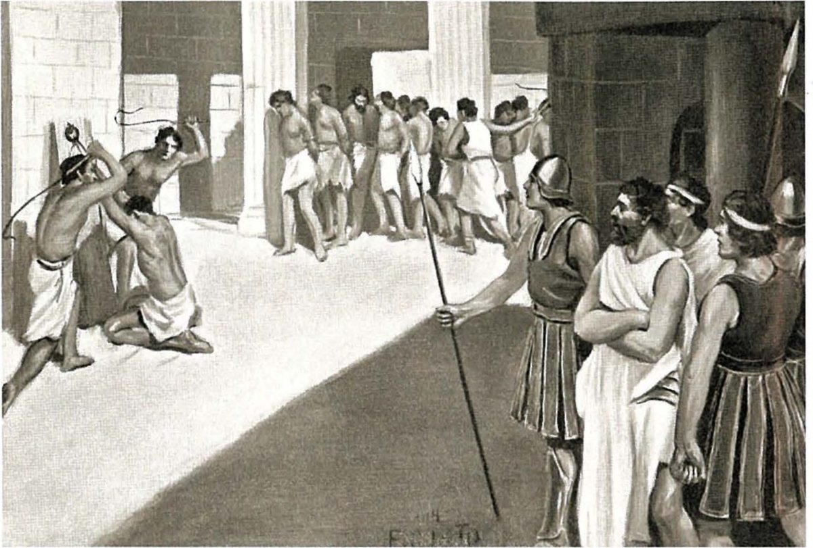

Spartan society to the Battle of Leuctra 371 BC · Lesson 8
The helots
Who farmed the land that fed Sparta’s citizens — and why do the ancient sources describe them so differently?
Year 12 Ancient History · Section II, Option G · Present with → or space · Read on a phone with R

Connect · 3 minutes · cold call
From the citizens to the people who fed them
Only full citizens, the homoioi, had a political voice, and a man could lose that place. Below them were the ‘inferiors’, and beside them the free but voiceless perioikoi. In c. 399 BC Cinadon, “not one of the equals”, said his aim was “To be no one’s inferior in Lakedaimon.”
The helots: the unfree people who worked the land that fed the citizens. We rarely, if ever, hear their own voices. So what can we know about them, and why do the writers who mention them disagree so much?
One key idea from Lesson 7, in one sentence.
Learning intentions and success criteria · 2 minutes
Today’s goals
- explain the origins, status and obligations of the helots
- analyse why the sources describe the helots so differently
- write a 4-mark outline answer
- explain where the helots came from, and how they differed from slaves elsewhere in Greece
- compare Tyrtaeus and Myron of Priene on date, author, purpose and claims
- explain why a late, hostile source might exaggerate the humiliation of the helots
- outline the roles of the helots in 7 minutes
Helots were unfree Greeks, native to the land they worked — not perioikoi, and unlike the mixed slave populations of most Greek cities. Messenians is not another word for helots: Cooley stresses “there were helots in large numbers in Lakonia as well as in Messenia”, and many people in Messenia were perioikoi.
Note-making · today’s routine
How to structure your notes
questions and key terms
short phrases, arrows (→ led to), abbreviations (Tyrt. = Tyrtaeus, Mes. = Messenia)
- 1Listen and look firstDon’t copy while the slide is being explained.
- 2Write your own notes at each ✎ checkpointPhrases, not sentences. Arrows for cause and effect.
- 3Compare with the model notesThey appear one row at a time. Add what you missed in a second colour.
- 4Copy each cue question into the left columnLater, cover your notes and answer the cue questions from memory.
- 5Finish with a three-sentence summaryFive checkpoints: origins · status · obligations · roles and freedom · numbers, fear and the scenery.
Key vocabulary
Words you will use today
| Status and work | Meaning |
|---|---|
| helot | a member of the unfree population of Laconia and Messenia, tied to the land and made to work it for Spartiate masters |
| serf | a farm worker bound to the land he works, who hands over part of the harvest; historians debate whether the helots are better called serfs or slaves |
| tribute · rent in kind | a payment made in produce (grain, oil, wine), not in money |
| subjugation | bringing a people under complete control |
| manumission | freeing a slave |
| neodamodeis | helots who had been freed, probably to serve in the army |
| Places and people | Meaning |
|---|---|
| Messenia | the fertile region west of Mt Taygetus, conquered by Sparta |
| Helos | a town in southern Laconia; ancient writers derived the word ‘helot’ from it |
| Mt Ithome | the mountain stronghold of Messenia |
| Tainaron | the southern tip of the middle Laconian peninsula, with a sanctuary of Poseidon |
| syssition | a citizens’ common mess; each member paid a monthly food contribution from his land, worked by helots |
| krypteia | a secretive institution for selected young men; Plutarch, citing Aristotle, says they killed helots (Lesson 12) |
Spelling: Cooley’s translations use Greek forms (Tyrtaios, Lakonia, Lakedaimonians, Messene, Ithome). In your own writing use Tyrtaeus, Laconia, Lacedaemonians.
1 · Where did the helots come from? · I do — map think-aloud
Spartan territory and the helots
- 1LaconiaSparta, with Amyklai about 5–6 km south. Helots lived here as well as in Messenia.
- 2The Eurotas valleyFarmland between Mt Taygetus (west) and Mt Parnon (east).
- 3HelosNear the mouth of the Eurotas. Ancient writers derived ‘helot’ from it.
- 4GytheionThe perioikic port on the Laconian Gulf.
- 5MesseniaWest of Taygetus; conquered c. 735–715 BC.
- 6Mt IthomeThe Messenians’ mountain stronghold; helots held out there after c. 464 BC.
- 7ThouriaA perioikic town in Messenia that joined the helot revolt.
- 8TainaronPoseidon’s sanctuary: a refuge for helots, and a place where slaves were freed.
1 · Where did the helots come from? · We do — two 5th-century writers
Origins: a name and a descent
Helots are not by birth the slaves of the Lakedaimonians, but the inhabitants of Helos and the first to be defeated by them, as many writers attest, including Hellanikos in his first book.
Hellanikos, FGrH 4 F188 · an ethnographer and chronicler from Lesbos, c. 480–395 BC · trans. in Cooley D37
The majority of the helots were descendants of the original indigenous population of Messenia, who had been enslaved by the Lakedaimonians. Thus they were all known as Messenians.
Thucydides, History of the Peloponnesian War 1.101.2 · an Athenian, c. 455–400 BC · trans. B. Wilson · Cooley D38
Where does Hellanicus say the word ‘helot’ comes from?
From Helos, a town in southern Laconia whose people were the first to be defeated. Cooley thinks a Greek root meaning ‘captured’ is probably more likely.
Does Thucydides say that most helots lived in Messenia?
No: he says most were descended from Messenians. Cooley: the helot system “should probably be sought in Lakonia” first, and, Cooley suggests, was extended when Sparta took Messenia.
1 · Where did the helots come from? · We do — the only near-contemporary voice
Origins: the conquest of Messenia
[...] to our king, dear to the gods, Theopompos,
Through whom we captured spacious Messene,
Messene good to plough and good to plant.
For it they fought ceaselessly for nineteen years
With their spears, our fathers’ fathers
With ever long-suffering hearts;
And in the twentieth they abandoned their rich tilled fields
And fled the great ranges of Ithome.
Tyrtaios, fragment 5 · mid-7th century BC · probably a Spartan poet · trans. K. Hughes · Cooley A5
Cooley dates the conquest c. 735–715 BC — the late 8th century, under King Theopompus. They fought for nineteen years, and the Messenians gave up in the twentieth.
Tyrtaeus wrote two generations later (“our fathers’ fathers”), in the mid-7th century, when — later sources say — Sparta was again at war with the Messenians.
Cooley: the detailed later tradition about the Messenian Wars “is best regarded as a form of elaborate national myth”. Tyrtaeus is the only near-contemporary voice.
Notes checkpoint 1 of 5
Origins
Write your own notes first. Then compare, row by row, and add what you missed in a second colour.
2 · What kind of unfree people? · I do — the status of the helots
Not quite like other Greek slaves
Slaves in most Greek cities were a mix of Greeks and non-Greeks. The helots were “not only undeniably Greek, but also native to the region”.
“Unlike slaves, helots were able to raise their own families and to expect stability in their lives.”
They were bound to the land they worked, and “chances of gaining freedom were rare (in return for military service)”.
Most worked for absentee masters and were “probably quite independent in organising their activities”, as long as they handed over a rent in kind. Some were probably household servants.
Archaeology suggests the helots had their own local cults: in Messenia, offerings continued at old sanctuaries, and new ones were built, in the archaic and classical periods.
The helots “did most of the agricultural work”, which gave the Spartiates “the resources and free time to maintain their unique society”.
All quotations from Cooley’s introduction to the helots (section D).
2 · What kind of unfree people? · We do — a late writer and a classical one
Who owned the helots — the state or their masters?
For the Lakedaimonians held them as state-slaves in a particular way, assigning certain settlements for them and particular duties.
Strabo, Geography 8.5.4 · a geographer writing around the turn of the era (64 BC – after AD 21) · trans. in Cooley D35
(In well-run states … ) each person has his own possessions but makes some available for his friends to use and others for communal use, just as in Lakedaimon they use each other’s slaves practically as their own as well as horses and dogs.
Aristotle, Politics 1263a33–37 · written 330s–320s BC · trans. in Cooley D33
Strabo says “state-slaves”. What does Aristotle’s example assume?
That each Spartiate had slaves of his own, which others could borrow.
Which writer is better evidence for the classical period, and why?
Aristotle: he wrote in the 4th century BC, and his example assumes slaves owned by individuals. Strabo wrote some three centuries later, though he was drawing on the 4th-century historian Ephorus (Cooley D34).
Cooley reports that recent scholars find classical texts “do not bear out this state ownership”. Hodkinson sees helots as “the private property of their Spartiate holders, but also as subject to various forms of communal intervention”. The community could step in: a decree of the Lacedaemonians freed the helots who had fought with Brasidas (Thucydides 5.34, Cooley E52).
Notes checkpoint 2 of 5
Status: what kind of unfree people?
3 · Obligations: two sources disagree · I do — the earliest source
Tyrtaeus on the conquered Messenians
Like asses distressed by great burdens,
Bringing to their masters from grievous necessity
Half of all the produce the ploughland bears.
Lamenting for their masters, both they themselves and their wives,
Whenever the baneful fate of death overtook one.
Tyrtaios, fragments 6 and 7 (quoted by Pausanias, Description of Greece 4.14.4–5) · mid-7th century BC · probably a Spartan poet · trans. K. Hughes · Cooley A6
What did the conquered owe?
Half of everything their land produced, handed to their masters.
What else were they made to do?
Mourn their masters, with their wives, when a master died. Cooley: “they were even forced to mourn their masters”.
What does “Like asses” do?
It shows the conquered as beasts of burden, to a Spartan audience. Cooley: Tyrtaeus “already demonstrates a clear notion of helot inferiority”.
3 · Obligations: two sources disagree · I do — modelling an annotation
OVPRL on Tyrtaeus: short, specific, your own words
| Code | Model margin note |
|---|---|
| O | Tyrt., mid-7th c. BC, prob. Spartan; ≈ 2 generations after the conquest |
| V | earliest evidence of dues: half the produce; forced mourning (+ wives) |
| P | war poetry for Spartans (later sung on campaign: Cooley A2) → celebrates the conquest |
| R | near-contemporary, but the conquerors’ voice; survives only because Pausanias quoted it, ≈ 800 yrs later |
| L | a few lines; conquered Messenians only, not Laconian helots; says nothing of later centuries |
- Abbreviations: Tyrt., c., yrs
- One idea per code
- Specific to this source
Cooley calls Pausanias’ history of Messenia “largely invented”. The lines may be genuine Tyrtaeus, but we see them only through a later writer’s choice.
3 · Obligations: two sources disagree · We do — a much later source
Myron of Priene on the treatment of the helots
Myron of Priene writes, in the second book of his Messenian History, that the Lakedaimonians treated the helots with the utmost arrogance: they imposed on the helots every demeaning task leading to their complete humiliation. For example they insisted that they must all wear a dog-skin cap; be dressed in animal skins; receive a set number of beatings each year irrespective of any wrongdoing, so that they would never forget that they were slaves. In addition, if any of them overstepped how they thought a slave should appear, they set death as the penalty, while the owners were penalised if they did not take down any who were getting fat. And when they assigned land to them they always set a fixed amount that they must produce for them.
Myron of Priene, Messenian History book 2 (probably 3rd century BC), quoted in Athenaios, Scholars at Dinner 14.74 (c. AD 200) · trans. in Cooley D41
When did these things happen?
Myron gives no date, and he wrote about four centuries after Tyrtaeus.
What does he say the helots owed?
“a fixed amount”, not half.

Cooley: his history “was criticised as inaccurate by Pausanias”, and later accounts of Messenia seem “strongly influenced by the Messenians’ efforts to ‘reconstruct’ a history for their region” after 370/69 BC.
3 · Obligations: two sources disagree · We do — comparison grid · 10 minutes
Tyrtaeus and Myron, side by side
| Tyrtaeus (Cooley A6) | Myron of Priene (Cooley D41) | |
|---|---|---|
| Date | mid-7th century BC, about two generations after the conquest | probably 3rd century BC; survives in Athenaeus, c. AD 200 |
| Author | a war poet, probably Spartan | a historian from Priene in Asia Minor, writing a Messenian History |
| Purpose | poetry for Spartans, celebrating the conquest | a history of the Messenians, written after they won their freedom in 370/69 BC |
| Claims | the conquered hand over half the produce and must mourn their masters | dog-skin caps, animal skins, yearly beatings, death for looking above a slave; a fixed amount of produce |
| Reliability | closest in time, but the conquerors’ voice; known only through Pausanias’ “largely invented” history | centuries later and undated; Pausanias called it inaccurate; may reflect the Messenians’ rebuilt history (Cooley) |
| Agree? | ✓ helots owe their masters produce, and are treated as inferior · ✗ half or a fixed amount; the ritual humiliation appears only in Myron (of these two) | |
3 · Obligations: two sources disagree · We do — a third witness
Half the produce — or a fixed amount?
The helots worked the land for them, paying a rent established in advance. Charging a higher rent was forbidden, so that the helots might make some profit and be happy to serve, and the masters would not be greedy for more.
Plutarch, Lakonian Customs 41 (Moralia 239E) · written c. AD 100 · trans. in Cooley D36
His Lycurgus gives each lot a yearly crop of 70 measures of barley for the man and 12 for his wife (8.4, Cooley D57), but Cooley treats the equal lots as “late tradition”.
Two later writers say a fixed amount; the earliest says half. Who is right?
Perhaps both: the sources may describe different times and places. Treat neither as the whole truth.
Whereas Tyrtaeus has the conquered Messenians hand over ‘Half of all the produce the ploughland bears’, Myron and Plutarch describe a fixed amount, which suggests that the arrangement changed over time or differed from place to place, rather than that one writer is simply wrong.
Check for understanding · hinge question · one finger = A, two fingers = B
Which source is closer in time to the events it describes?
- ATyrtaeus, fragments 6–7
- BMyron of Priene, Messenian History
A. Tyrtaeus wrote in the mid-7th century BC, about two generations after the conquest; Myron probably in the 3rd century BC, with no date for what he describes. Closer in time is not the same as neutral: Tyrtaeus wrote for the conquerors.
3 · Obligations: two sources disagree · You do · 8 minutes · press K for the timer If time
Your turn: annotate Myron, then link the two extracts
- O — how many centuries after Tyrtaeus? Who preserved him?
- V — what picture of helot life does he give?
- P — why might a history of the Messenians, written after 370/69 BC, stress Spartan cruelty?
- R — Pausanias called Myron inaccurate. How does that affect your judgement?
- L — he gives no date for these practices. Why is that a problem?
Draw a ✓ between the extracts where they agree and a ✗ where they disagree. Label each link in three words or fewer.
✓ produce owed to masters · ✓ helots inferior · ✗ half v. fixed amount · ✗ beatings and caps only in Myron · ✗ 7th c. v. undated
Notes checkpoint 3 of 5
Obligations: two sources disagree
4 · What did helots do? · I do — roles, not treatment
What did helots do?
They “did most of the agricultural work” (Cooley), handing over part of the harvest.Tyrtaeus A6 · Plutarch D36
On estates where a Spartiate family lived, “they were probably also employed as household servants”.Cooley, introduction to the helots
At Plataea, “seven serving each man”. At Thermopylae Eurytus’ helot servant led him to the battle, then ran away.Herodotus 9.28 (E84) · 7.229 (F21)
Light-armed at Plataea; about 700 sent “as hoplites with Brasidas”; in 370/69 BC, offered freedom, “More than six thousand helots, it is said, enrolled themselves”.Thucydides 4.80 (E68) · Xenophon, Hell. 6.5.28–29 (E69)
After Plataea they were “ordered … to collect the valuable items” — and stole some to sell to the Aeginetans.Herodotus 9.80 (E61)
At a king’s funeral, “many thousands of them, together with helots and also Lakedaimonians themselves, congregate in one place”.Herodotus 6.58 (D10) · Lesson 4
Roles, not treatment: a role is what helots did. Dog-skin caps and beatings are what was done to them; the krypteia is how they were controlled (Lesson 12).
4 · What did helots do? · We do — evidence carved at the time
Freed at Tainaron: a manumission stele
Theares dedicated Kleogenes to Pohoidan. The ephor was Daiochos; the witnesses Arion, Lyon.
Marble stele from the sanctuary of Poseidon at Tainaron, southern Laconia · c. 450–432 BC · about 57 cm high · IG V 1, 1228 · British Museum 1880,0917.1 · trans. in Cooley C20. Pohoidan is the Laconian form of Poseidon.
Cooley: it is “one of four similar objects” found at Tainaron, and “All four follow the same formula”: owner, slave, Poseidon, an ephor and two witnesses.
Was the freed slave a helot?
Probably. His name is very Greek, so Cooley concludes “the slave was probably a (Greek) helot”.
Why name an ephor and two witnesses?
To make the act official and public; the ephor’s name probably also dates it (Lesson 6: one ephor gave his name to the year).
What can it not tell us?
“The inscriptions do not tell us whether the owners were Spartiates or perioikoi.” Cooley also allows that the owner may have been a perioikos freeing his own slave.
Why it matters: local evidence made at the time, not filtered through later writers. If the slave was a helot, an individual owner freed him — which fits the view of helots as private property.
Notes checkpoint 4 of 5
Roles and freedom
5 · Numbers, fear and the scenery · We do — the only ancient ratio
How many helots were there?
[28.2] After this, those who had recently arrived and those who had come at the start were drawn up as follows. Ten thousand Lakedaimonians held the right wing: of them, five thousand were Spartiates who were guarded by thirty-five thousand light-armed helots – seven serving each man.
Herodotus, Histories 9.28.2 · written c. 450s–420s BC · trans. B. Wilson · Cooley E84
Does this tell us how many helots there were?
No: it counts one army on one campaign, not the whole population. Modern estimates vary widely.
What else does it show?
How far the Spartiates relied on helots in war — and that half of the “Lakedaimonians” in the line were not Spartiates.
Cooley: a few thousand Spartiates controlled “a subject population of at least a hundred thousand” (he refers readers to Figueira on demographics). This probably counts perioikoi as well as helots.
5 · Numbers, fear and the scenery · I do — two writers who saw danger
“Lying in wait”: writers who saw the helots as a danger
The class of serfs in Thessaly often attacked the Thessalians, just as the helots seem continually lying in wait for disasters to befall the Lakedaimonians. … For if they are given any latitude they become insolent and claim equal treatment to their masters; but if they suffer brutality in their lives, they hate and plot against them.
Aristotle, Politics 1269a34–1269b12 (part) · written 330s–320s BC, after Sparta had lost Messenia · trans. in Cooley D27
Aristotle writes with hindsight, a generation after the helots of Messenia were freed — and as a critic of Sparta’s system, writing after its decline (Cooley calls his criticism “valuable”).
As far as the Lakedaimonians were concerned, considerations of security …
[either] … were always paramount in matters regarding the helots
[or] … against the helots were always paramount.
Thucydides, History of the Peloponnesian War 4.80.3 · an Athenian, c. 455–400 BC · trans. B. Wilson · Cooley D39
What is the difference?
Either “where helots were concerned, Spartans put safety first”, or “fear of the helots was a major factor for all Spartan policy”. Cooley: “The first is perhaps to be preferred”.
5 · Numbers, fear and the scenery · I do — a different frame
“Part of the scenery”: Cooley’s conclusion
As hoplites (Thucydides 4.80; Xenophon, Hell. 6.5.28–29), as attendants (seven at Plataea) and as freed neodamodeis.
The great revolt of c. 464 BC began only after an earthquake devastated Sparta (Thucydides 1.101).
Messenia was freed by an invading Theban army: “the sources simply speak of an external liberation”.
Evidence of tension may stand out “because peaceful co-existence does not ‘make the headlines’”. We should “not over-interpret the relatively few (if impressive) pieces of evidence”.
Though Aristotle and Thucydides portray helots as trouble, Herodotus and for the most part Xenophon portray them simply as part of the scenery.
M. G. L. Cooley, Sparta (2023), conclusion on the helots
5 · Numbers, fear and the scenery · We do — the inquiry question
Why do the sources disagree about the helots?
Tyrtaeus wrote in the 7th century BC, Myron centuries later, Plutarch about AD 100. Even Plutarch thought the harshest treatment came later.
A poet, probably Spartan, celebrating victory; a history of the Messenians written after their freedom; an Athenian historian who fought against Sparta; a philosopher criticising Sparta after its decline.
Messenian helots, with memories of independence, may have been treated differently from Laconian helots.
[6] My own view is that such savage ill treatment by the Lakedaimonians was in fact a later development, consequent upon the great earthquake, when the helots united with the people of Messenia in revolt against them …
Plutarch, Life of Lykourgos 28.6 · written c. AD 100 · trans. B. Wilson · Cooley D44
Tyrtaeus, in the 7th century, “already demonstrates a clear notion of helot inferiority” (Cooley). Harsh treatment may have grown after c. 464 BC, but the helots’ inferior status did not begin then.
Check for understanding · gesture vote
“Fear of the helots shaped Spartan society.”
Agree
Partly
Disagree
Justify your vote with a named source: Aristotle, Thucydides, Herodotus or the Tainaron stele.
Notes checkpoint 5 of 5
Numbers, fear and the scenery
Finish your notes
Summary: three sentences
- Who were the helots, and what was their status?
- What did they owe and do — and why do Tyrtaeus and Myron differ?
- Fear or scenery: how should we read the evidence?
The helots were unfree Greeks in Laconia and Messenia, many descended from the Messenians conquered in the late 8th century BC, who were tied to the land and, on Hodkinson’s view, owned by individual Spartiates but subject to communal intervention. They farmed their masters’ land and handed over produce — half, says Tyrtaeus, or a fixed amount in later sources — and served as attendants and soldiers, while Myron’s much later stories of ritual humiliation may reflect the Messenians’ own rebuilt history. Aristotle and Thucydides present the helots as a danger, but Cooley notes that Herodotus and most of Xenophon treat them as part of the scenery, so the evidence shows reliance as well as fear.
6 · Answering HSC questions
Two HSC questions on today’s lesson
25 marks, about 45 minutes — about 1.8 minutes a mark. 4 marks ≈ 7 minutes; 12 marks ≈ 22 minutes.
NESA: “Sketch in general terms; indicate the main features of”.
Not a glossary key word. Start from named evidence and draw conclusions from it.
Question 1 (2019, 4 marks): you write, then check against NESA’s sample. Question 2 (2024, 12 marks): we take it apart and plan it from Lessons 7 and 8.
HSC 2019 · Section II · Question 10 (a) · 4 marks
Outline the roles of the helots in this period.
Question 1 · We take it apart, you write for 7 minutes, then we check against NESA.
HSC 2019 Q10(a) · We do — deconstruct the question
What the question is really asking
The main features, sketched: several roles, each in a few precise words, with a source or example. No introduction, no judgement needed.
What helots did: farming, service, war. Not how they were treated (caps, beatings) or controlled (the krypteia).
From the conquest of Messenia to Leuctra, 371 BC: Tyrtaeus, Plataea, Brasidas — and, just after, the helots who enrolled to fight for Sparta in 370/69 BC.
About 7 minutes · four roles, each with a source or example · about 80–120 words.
HSC 2019 Q10(a) · You do · 7 minutes · press K for the timer
Outline the roles of the helots in this period. (4 marks)
- four roles: what helots did
- a source or example for each: Tyrtaeus, Herodotus 9.28, Thucydides 4.80
- nothing about treatment instead of roles
- about 80–120 words
Start: “The helots’ main role was agricultural: they …”
HSC 2019 Q10(a) · the marking guidelines
What the markers rewarded
| Marks | Criteria (2019, part (a)) |
|---|---|
| 4 | Provides a developed outline relevant to the question · Communicates using appropriate historical terms and concepts |
| 3 | Provides a sound outline relevant to the question · Communicates using some appropriate historical terms and concepts |
| 2 | Provides a basic outline relevant to the question · May use historical terms and/or concepts |
| 1 | Makes a general statement(s) relevant to the question |
A “developed” outline, not a “sound” or “basic” one: each role developed with a detail or a source, not just named.
NESA published no marking feedback for this question, so the criteria and the sample answer (next) are our guide.
Source: NESA, 2019 HSC Ancient History Marking Guidelines (Section II, part (a)), quoted exactly.
HSC 2019 Q10(a) · I do — NESA’s sample answer, annotated
NESA’s sample answer, in 36 words — and claims to check
Sample answer from the NESA 2019 HSC Ancient History Marking Guidelines · 36 words
Marker’s margin
Even sharper: name the sources, and add household service, collecting plunder (Herodotus 9.80) and mourning at royal funerals (Herodotus 6.58) — and that some were freed as neodamodeis.
HSC 2019 Q10(a) · Self-mark
Mark your own answer
Underline any sentence about treatment; replace it with a role.
The helots’ main role was agricultural: they farmed their Spartiate masters’ land in Laconia and Messenia and handed over part of the produce — ‘Half of all the produce the ploughland bears’, according to Tyrtaeus, or a fixed amount in later sources such as Plutarch. Some were probably household servants (Cooley). In war they attended Spartiates: at Plataea in 479 BC Herodotus counts seven light-armed helots ‘serving each man’. Some fought as hoplites, such as the 700 or so who went with Brasidas in 424 BC, and these were later freed. Helots also joined the mourning at royal funerals (Herodotus 6.58).
Five roles, each with a source or example · 100 words
HSC 2024 · Section II · Question 11 (d) · 12 marks
What does evidence reveal about Spartan social structure during this period? Support your response using evidence from relevant sources.
Question 2 · We do — take it apart and plan it from Lessons 7 and 8.
HSC 2024 Q11(d) · We do — deconstruct together
What does this question want?
Start from named evidence, written and archaeological, and say what it shows. The top band asks for “an informed explanation of what evidence reveals”, not a tour of the groups.
The groups — Spartiates (homoioi), inferiors, perioikoi, helots, and women — and how they related to each other. Not the constitution (Lessons 3–6), except where citizenship decided who had a voice.
To 371 BC — and the structure changed: Spartiates fell from about 8,000 in 480 BC to about 1,500 by 371 BC (Cooley’s table).
Name writers and objects, with their dates: Tyrtaeus, Herodotus, Xenophon, Aristotle, Myron; the Tainaron stelai.
About 22 minutes · a thesis that says what the evidence reveals · three body paragraphs · about 450–600 words. Lesson 28 returns to this question with a model plan.
HSC 2024 Q11(d) · the marking guidelines and the markers’ feedback
What the markers rewarded
| Marks | Criteria (2024, part (d)) |
|---|---|
| 10–12 | Provides an informed explanation of what evidence reveals about the relevant aspect of society during this period · Demonstrates detailed knowledge and understanding relevant to the question · Integrates evidence from a range of relevant sources to support the response · Communicates effectively using a range of appropriate historical terms and concepts |
| 7–9 | Provides an explanation of what evidence reveals about the relevant aspect of society during this period · Demonstrates knowledge and understanding relevant to the question · Uses evidence from a range of relevant sources to support the response · Communicates using appropriate terms and concepts |
| 4–6 | Provides some understanding of what evidence reveals about the relevant aspect of society · Demonstrates some knowledge relevant to the question · Refers to one or more sources in the response · Communicates using some appropriate historical terms and concepts |
| 1–3 | Makes general statement(s) about society/an aspect of society · May refer to source(s) · May use historical terms and/or concepts |
clearly connect a range of relevant written and archaeological evidence to provide a detailed and informed explanation of the Spartan social structure (d)use historical terms and concepts, such as spartiate, perioikoi and helots to demonstrate understanding of the Spartan social structure (d).
using relevant information that connects to the unique Spartan social structure (d)integrating/using sources in the response rather than just referring to writers in a generic way (d)
Source: NESA, 2024 HSC Ancient History Marking Guidelines (Section II, part (d)) and the 2024 marking feedback for Question 11, quoted exactly.
HSC 2024 Q11(d) · NESA’s “answers could include”
What the marking guidelines listed — checked against Cooley
Evidence reveals that Spartan society was highly stratified, despite calling its citizens homoioi.Plutarch’s Life of Lycurgus reveals significant evidence about Spartan social structure during this period. This source provides the most detailed account of the organisation of Spartan society, with information on the structure of society and political organisation. Plutarch describes the ephorate, gerousia and ekklesia, as well as details on the dual kingship and the existence of an elite.Evidence about women in Spartan society can be found in the sources of other Greek writers, such as Aristotle and Plutarch. These sources focus on how different Spartan women were to women in other Greek poleis. Plutarch also records the ‘Sayings of Spartan Women’, a text which reveals non-Spartan stereotypes about Spartan women linked to the militaristic nature of society.There is limited evidence for the role of perioikoi in Spartan society, with few textual references.Evidence from Xenophon demonstrates that perioikoi, helots and inferiors were unhappy with their position in the Spartan social system, revealed in the Kinadon conspiracy of 399 BC.Archaeological evidence from Lakonia reveals the resources the perioikoi likely contributed to the economy, including marble, iron and murex.
Xenophon reports a conspirator’s claim; it does not “demonstrate” what most people felt. Cooley: “Kinadon has every reason to exaggerate”, and Sparta “managed to remain stable until 370/69 BC”.
Detailed, but written c. AD 100: anything “not explicitly identified as taken from a genuinely archaic or classical source should be considered as secondary material”.
The helots. Add today’s evidence: Tyrtaeus (A6), Herodotus 9.28 (E84) and the Tainaron stelai (C20) — archaeology, as the feedback asked.
Source: NESA, 2024 HSC Ancient History Marking Guidelines, Section II part (d), Option G, quoted exactly. A list of acceptable content, not a model answer.
HSC 2024 Q11(d) · We do — a plan scaffold from Lessons 7 and 8, written for this lesson
Thesis, three paragraphs, evidence under each
| Move | Claim | Evidence (written + archaeological) | → What it reveals |
|---|---|---|---|
| Thesis | The evidence reveals a highly stratified society: a small and shrinking body of citizens depended on far larger free and unfree populations without a political voice — though most of the evidence comes from outsiders, and the helots rarely, if ever, speak for themselves. | ||
| 1 · The homoioi (L7) | Citizenship was conditional, and could be lost | Xenophon, Lak. Pol. 10.7 (D51) · Aristotle on mess dues (D62) · Aristodemus (Herodotus 7.231, F21) · Cooley’s table: c. 8,000 (480 BC) → c. 1,500 (371 BC) | “equals” was an ideal; numbers shrank |
| 2 · Between citizen and slave (L7) | Inferiors and perioikoi: free, but without a voice at Sparta | Xenophon on Cinadon (E53a–b), weighed with Cooley’s caution · Herodotus 9.28: 5,000 of 10,000 Lacedaemonians were Spartiates · Laconian iron, marble, murex | a society that relied on non-citizens; tension claimed, perhaps exaggerated |
| 3 · The helots (L8) | Unfree Greeks whose labour and service supported the system | Tyrtaeus fr. 6–7 (A6) v. Myron (D41) · Herodotus 9.28 (E84) · Tainaron stelai (C20) · Thucydides 1.101 (E62) | reliance as well as fear; status debated; late sources need care |
| Conclusion | The evidence shows the top of the structure clearly and the bottom only dimly, and what it reveals depends on who wrote it, and when. | ||
HSC 2024 Q11(d) · Self-check
Check your plan
Could someone read only your thesis and your last sentence and know what the evidence reveals? That is the line of explanation the top band needs.
Outline the obligations of the helots. (4 marks)
Explain why ancient writers disagree about the treatment of the helots. (8 marks)
Practice and review · 1 of 7 · sequencing
Put these events in order, earliest first
Write the letters in order and add a date or approximate period for each.
- ACinadon’s conspiracy is uncovered by the ephors.
- BSparta conquers Messenia in the twentieth year of war.
- CAristodemus returns from Thermopylae and is shunned.
- DAt Plataea, seven helots attend each Spartiate.
- EAn earthquake strikes Sparta; Messenian helots and two perioikic towns revolt.
- FBrasidas’ helot soldiers are freed and the Sphacteria prisoners lose their citizenship.
- GSome perioikoi urge the invading Thebans to enter Laconia.
Practice and review · 1 of 7 · sequencing · the answer key
Sparta’s social history in order
Practice and review · 2 of 7 · true, false, justify
True or false? Justify with a source
- 1A Spartiate who could not pay his mess contribution kept his citizenship. False — Aristotle: “anyone who cannot pay this tax cannot belong” (Politics 1271a, Cooley D62).
- 2The perioikoi had no political rights at Sparta but were personally free. True — “They were personally free, but politically their communities were subject to Sparta” (Cooley).
- 3The word hypomeiones appears in many ancient writers. False — Xenophon’s use at Hellenika 3.3.6 is “the only use of the term” (Cooley).
- 4Tyrtaeus says the conquered Messenians handed over half of their produce. True — “Half of all the produce the ploughland bears” (fr. 6–7, Cooley A6).
- 5Herodotus gives a ratio of seven helots for each Spartiate at Plataea. True — “seven serving each man” (9.28, Cooley E84) — but for one army, not the whole population.
- 6Myron of Priene lived at the time of the Messenian wars. False — he was “probably of the third century BC” (Cooley), centuries after the conquest of c. 735–715 BC.
- 7All the helots lived in Messenia. False — “there were helots in large numbers in Lakonia as well as in Messenia” (Cooley).
- 8The Tainaron stele tells us that the slave’s owner was a Spartiate. False — “The inscriptions do not tell us whether the owners were Spartiates or perioikoi” (Cooley, note on C20).
Practice and review · 3 of 7 · cloze
Fill the gaps
- Hellanicus derived the word ‘helot’ from the town of Helos.
- Tyrtaeus says the conquered Messenians fled the great ranges of Ithome.
- Herodotus says seven helots served each Spartiate at the battle of Plataea.
- About 700 helots went as hoplites with Brasidas.
- Helots freed, probably to serve in the army, were called neodamodeis.
- Freeing a slave is called manumission.
- Four stelai recording the freeing of slaves were found at Tainaron.
- Myron of Priene’s words survive because Athenaeus quoted them.
Practice and review · 4 of 7 · write an analytical paragraph · HSC-style, written for this lesson
Why do the ancient sources give such different pictures of the helots?
The ancient sources give such different pictures of the helots mainly because they were written at different times, for different purposes, about different helots. Tyrtaeus, probably a Spartan poet of the mid-7th century BC, shows the conquered Messenians ‘Like asses distressed by great burdens’, handing over ‘Half of all the produce the ploughland bears’, whereas Myron of Priene, probably writing in the 3rd century BC, claims that helots had to wear a dog-skin cap and suffer ‘a set number of beatings each year irrespective of any wrongdoing’. Both present the helots as inferior, but Myron gives no date, Pausanias criticised his history as inaccurate, and Cooley warns that later accounts of Messenia seem shaped by the Messenians’ efforts, after 370/69 BC, to rebuild their own history. By contrast, Herodotus shows helots serving Spartiates at Plataea, and Cooley concludes that Herodotus and most of Xenophon treat them ‘simply as part of the scenery’. The disagreement therefore reveals less about one unchanging helot experience than about when, why and from which side each writer described it.
Practice and review · 5 of 7 · extended response · HSC-style, written for this lesson (Chapter 6, Activity E)
To what extent do the sources support the view that Spartan society was shaped by fear of the helots? (15 marks)
Use evidence from relevant sources. Plan it in four moves:
- Thesis in your first sentence: how far did fear, rather than reliance, define the relationship?
- Evidence of fear: Aristotle (Politics 1269a, Cooley D27), Thucydides 4.80 (Cooley E68, and the two translations in D39) and Myron (Cooley D41) — judge each source’s date and purpose.
- Evidence of reliance and stability: Herodotus 9.28 (Cooley E84), the neodamodeis (E52, E131), the Tainaron stelai (C20) and Cooley’s conclusion on the helots.
- Why the sources disagree: date, perspective, purpose and place. Weigh the view, as Cooley puts it, that “it can be argued that the pressure of keeping such a large territory under control defined Spartan society”.
Lesson 12 (controlling the helots: the krypteia and the messes) adds more evidence for move 2.
Practice and review · 6 of 7 · Chapter 6 review, questions 1–4
Chapter review: social structure (1)
- List the conditions a man had to meet to remain one of the homoioi. Complete the agoge; win election to a syssition; pay his monthly mess contribution, which in practice meant owning land worked by helots; and obey the laws and show courage in war. Xenophon: a man who failed in his obligations was “no longer to be regarded as one of the homoioi” (Lak. Pol. 10.7, Cooley D51).
- Name three ways a Spartiate could lose full citizen status. Poverty: being unable to pay his mess contribution (Aristotle, D62). Cowardice: the “tremblers”, such as Aristodemus after Thermopylae (Herodotus 7.231, F21). Surrender: the Sphacteria prisoners (captured 425 BC) lost their citizenship in 421 BC, later reinstated (Thucydides 5.34, E52).
- Explain the difference between the perioikoi and the helots. The perioikoi were personally free, lived in their own towns, owned land, probably ran their own local affairs and fought as hoplites, but had no political rights at Sparta. The helots were unfree, tied to the land, worked Spartiates’ estates and handed over produce, and were rarely freed.
- What were the main occupations of the perioikoi, and why did Sparta depend on them? Probably trade, fishing and crafts (pottery, armour, weapons), working Laconia’s iron, lead and building stone, and running the harbours, above all Gytheion. Spartiates could not trade, so Sparta “had to rely on a variety of goods and services provided by the perioikoi” (Cooley) — and perioikoi fought beside them as hoplites.
Practice and review · 7 of 7 · Chapter 6 review, questions 5–8
Chapter review: social structure (2)
- Why is Herodotus’ figure of seven helots for each Spartiate important, and why should it be used with care? It is the only ancient ratio (9.28, E84), and it shows how far the army relied on helots. But it counts one army in 479 BC, not the whole population; modern estimates vary widely.
- Compare what Tyrtaeus and Myron say about the obligations of the helots. Tyrtaeus (mid-7th century BC) says the conquered handed over half of their produce and mourned their masters; Myron (probably 3rd century BC) says a fixed amount, plus ritual humiliations. Whereas Tyrtaeus is close in time but the conquerors’ voice, Myron is late, undated and was called inaccurate by Pausanias. Plutarch’s fixed rent (D36) agrees with Myron that the amount was fixed — perhaps for a different time or place.
- How reliable is the Cinadon passage as evidence for the attitudes of non-citizens? Xenophon was a contemporary who served under King Agesilaus, but we hear Cinadon’s words through an informer, the ephors and Xenophon. Cooley: “Kinadon has every reason to exaggerate” the numbers and the hatred, and Sparta “managed to remain stable until 370/69 BC”. It shows what a conspirator claimed, not what most non-citizens felt.
- Evaluate Cooley’s view that Herodotus and most of Xenophon treat the helots as part of the scenery. Largely convincing: Herodotus’ helots attend, fight and collect plunder; many were freed as neodamodeis; the great revolt needed an earthquake; and Messenia was freed from outside in 370/69 BC. But Thucydides 4.80 and Aristotle show real Spartan concern, and Cooley himself admits “There were clearly times when Spartan worries about the helots were justified”. Reliance and fear existed together.
Exit ticket · before you leave
Finish two sentences
Myron of Priene may exaggerate the humiliation of the helots because …
One role of the helots, with the source that shows it.
Next lesson: the agoge I — the purpose and stages of Spartan education, the first condition of citizenship.
Sources and credits
Where everything comes from
Quoted from the translations in M. G. L. Cooley (ed.), Sparta, LACTOR Sourcebooks in Ancient History 21, 2nd edn (Cambridge University Press, 2023): Tyrtaios frs 5, 6–7 (A5, A6, trans. K. Hughes); Hellanikos (D37); Thucydides 1.101.2, 1.128.1, 4.80 and 5.34 (D38, E62, E62b, D39, E68, E52, trans. B. Wilson); Herodotus 6.58, 6.75, 7.229–231, 9.10, 9.28 and 9.80 (D10, E22, F21, E24, E84, E61, trans. B. Wilson); Xenophon, Constitution of the Lakedaimonians 6.3 and 10.7 (D32, D51, trans. B. Wilson) and Hellenika 3.3.4–11, 3.4.2, 6.5.25 and 6.5.28–29 (E53a–b, E131, E59, E69); Aristotle, Politics 1263a, 1269a and 1271a (D33, D27, D62); Strabo 8.5.4 (D35); Plutarch, Life of Lykourgos 8 and 28 (D57, D44, trans. B. Wilson) and Lakonian Customs 41 (D36); Myron of Priene in Athenaios 14.74 (D41); Plato, Laws 633b–c (D42); the Suda on Tyrtaios (A1); Philochoros in Athenaios 14.29 (A2); Lykourgos, Against Leokrates 106–7 (A7); Strabo 6.3.3 (H4); manumission stele from Tainaron, IG V 1, 1228 (C20). Cooley’s introductions to social structure, the perioikoi and the helots, his conclusion on the helots, his notes on ancient authors and his notes on A6, C20, D39, E53b and E68, including S. Hodkinson, Property and Wealth in Classical Sparta (2000), and T. J. Figueira, ‘The Demography of the Spartan Helots’ (2004), as cited there.
- Olive groves in the fertile Eurotas valley today — Clarke & Garner, Fig 6.2
- A modern illustration of helots being beaten, based on the late claim of a set number of beatings each year (Myron of Priene, Cooley D41) — not ancient evidence — Clarke & Garner, Fig 3.5
Books: Clarke & Garner, Spartan society textbook (school copy).
Textbook images are reproduced for teaching, with the source given under each one. Drawn for this lesson: the map of Spartan territory and the helots (replacing Clarke & Garner, Fig 1.2; coastline from Natural Earth, public domain); the comparison grid; the Activity A timeline.
HSC questions, marking criteria, sample answer, “answers could include” and marking feedback: NSW Education Standards Authority, 2019 and 2024 HSC Ancient History examinations and marking guidelines, and the 2024 marking feedback. © NESA. NESA glossary of key words for “outline”.